Rocking all over Blackpool.
14-Jun-2017 | Milku
Actually most of the collection isn't local...
It's Day 14 of 30 Days Wild and, today, we've been looking at a rock collection. No, we’re not talking about a CDs or Blackpool’s famous confectionery. We’re still enjoying being wild so the rocks are entirely natural.
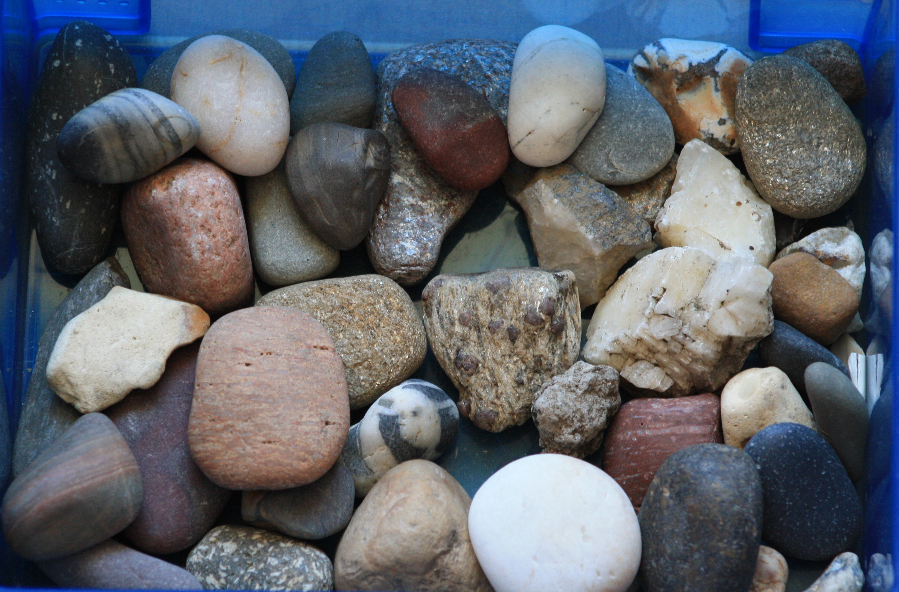 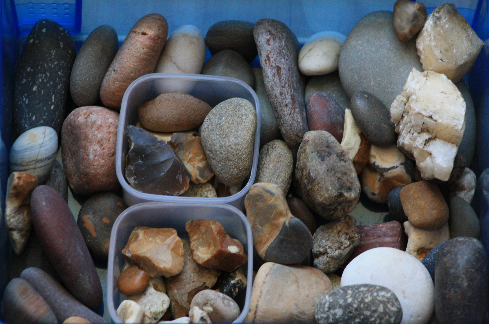One of my little humans wants to be a geologist when she grows up and picks up stones wherever she goes. She's got boxes full of them!
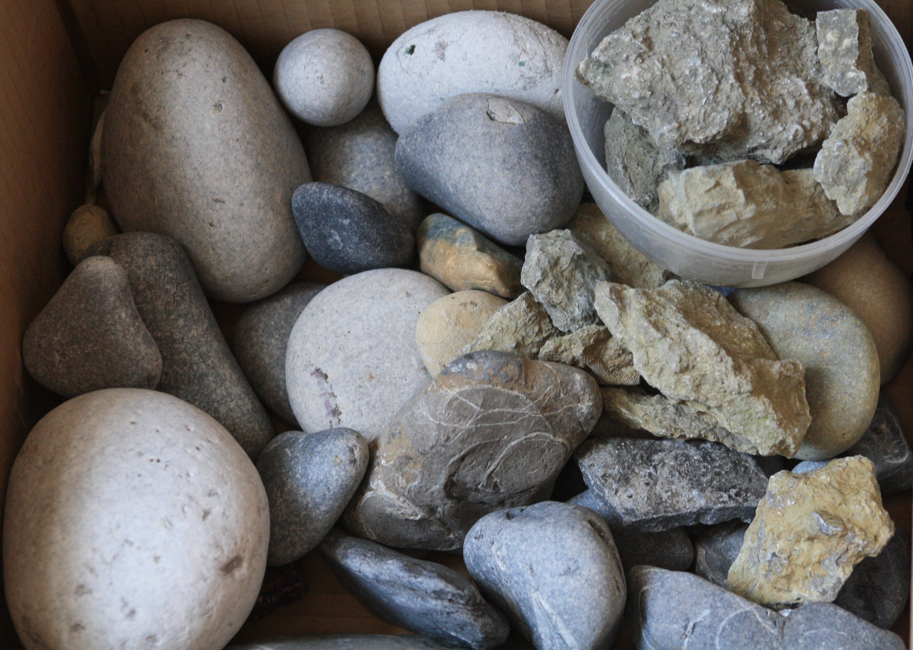 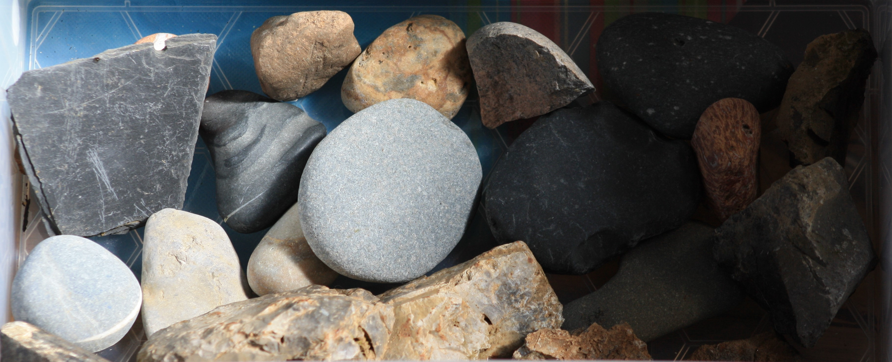She’s tried to find fossils. Even to my untutored eye, these stones could contain a fossil or two. But we are waiting to confirm that.
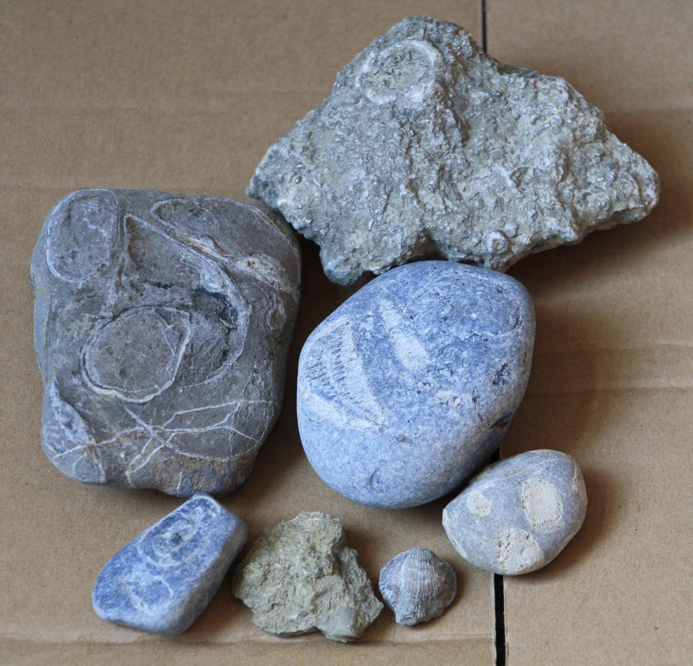Generally, she just brings home rocks that look interesting or are a nice colour. And, occasionally, she’s allowed to buy gemstones too.
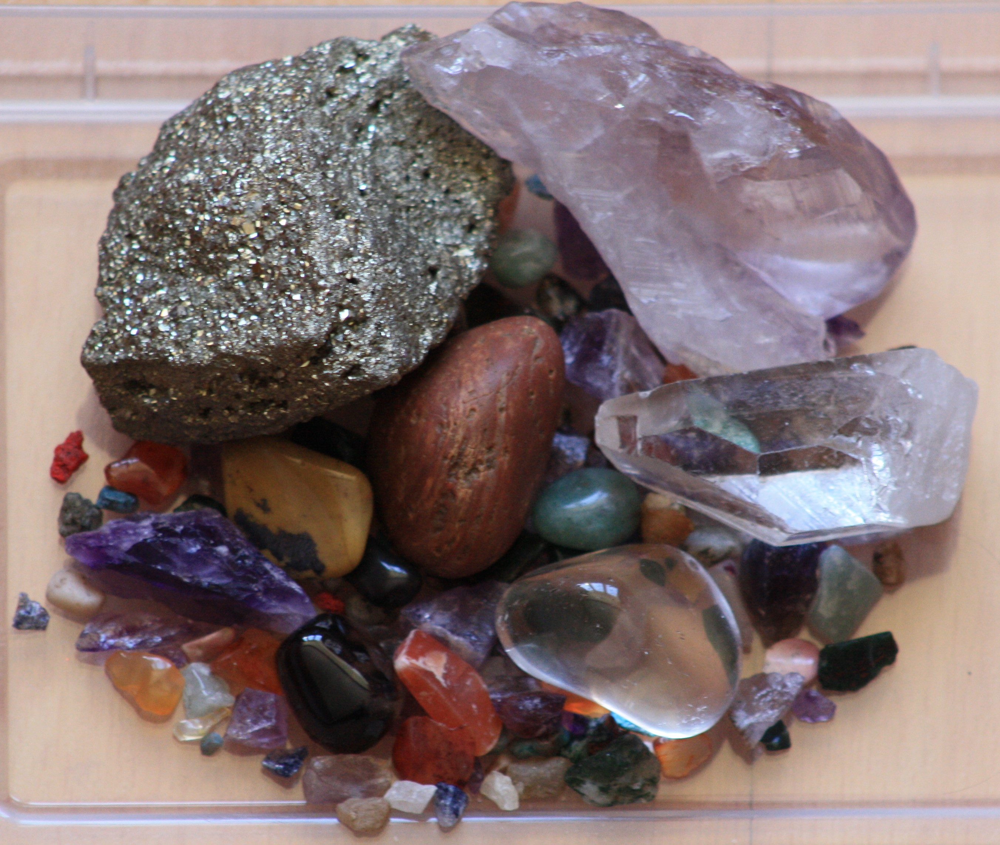She’s hoping that one of her cousins will tell her all about these stones sometime soon. She claims that he's an expert, but I haven't met him yet so can't comment...
In the meantime, she’s been looking through a book of rocks to try to identify her favourite stones... she's got quite a few. I've had a little look on the internet too, but can't quite decide what they are.

One great big lump of rock seems to have a layer of quartz on one end that sparkles in the sunshine. She bought the purple stone alongside it because it seems to change colour when you look at it from different angles.
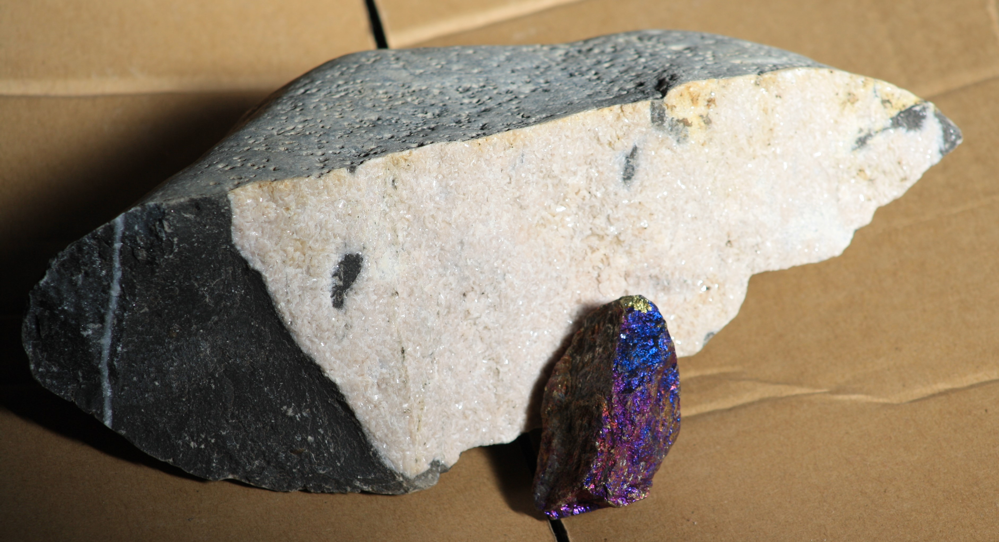Other favourites have been selected because of their shape. She's got one that is shaped like a triangle and one that is definitely heart-shaped. The other stone in the pictures has been eroded to leave a raised pattern on the surface.
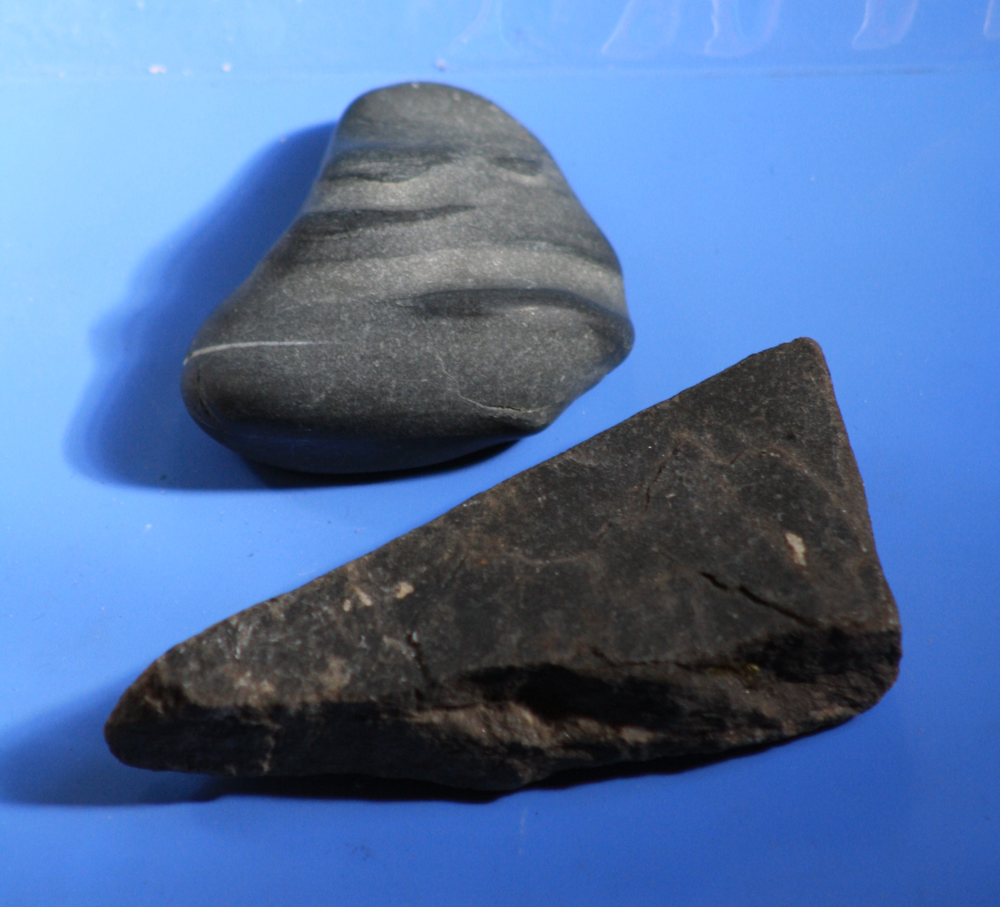 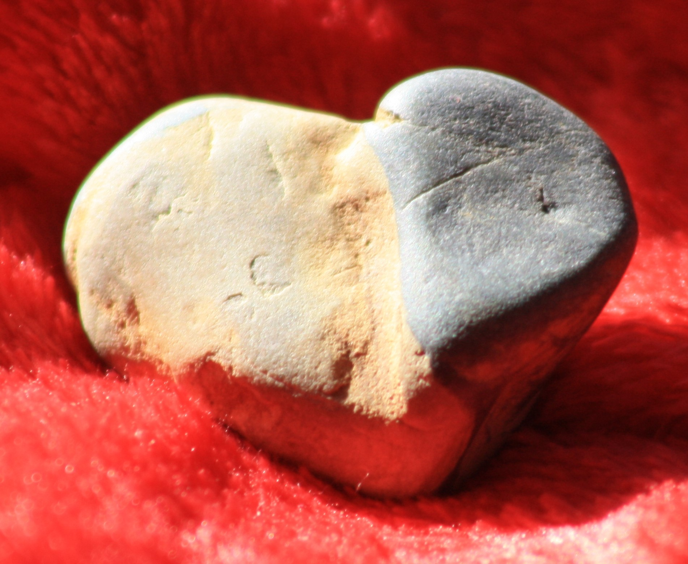She likes stones that seem to contain more than one mineral, where there are distinct layers visible or interesting colour combinations.
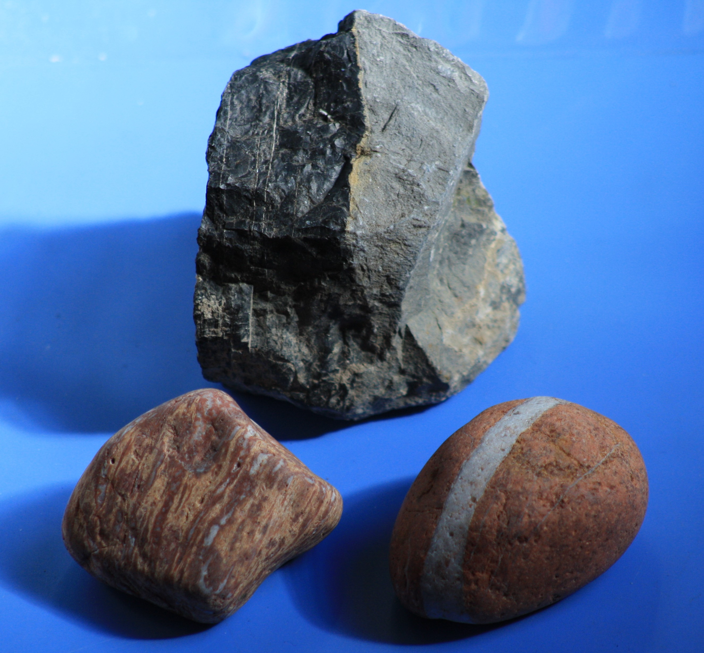She’s lent me a couple of nice smooth pebbles to look at. I wish she’d take others out of my cage soon…they get in the way of me getting quickly to my dish of snacks.
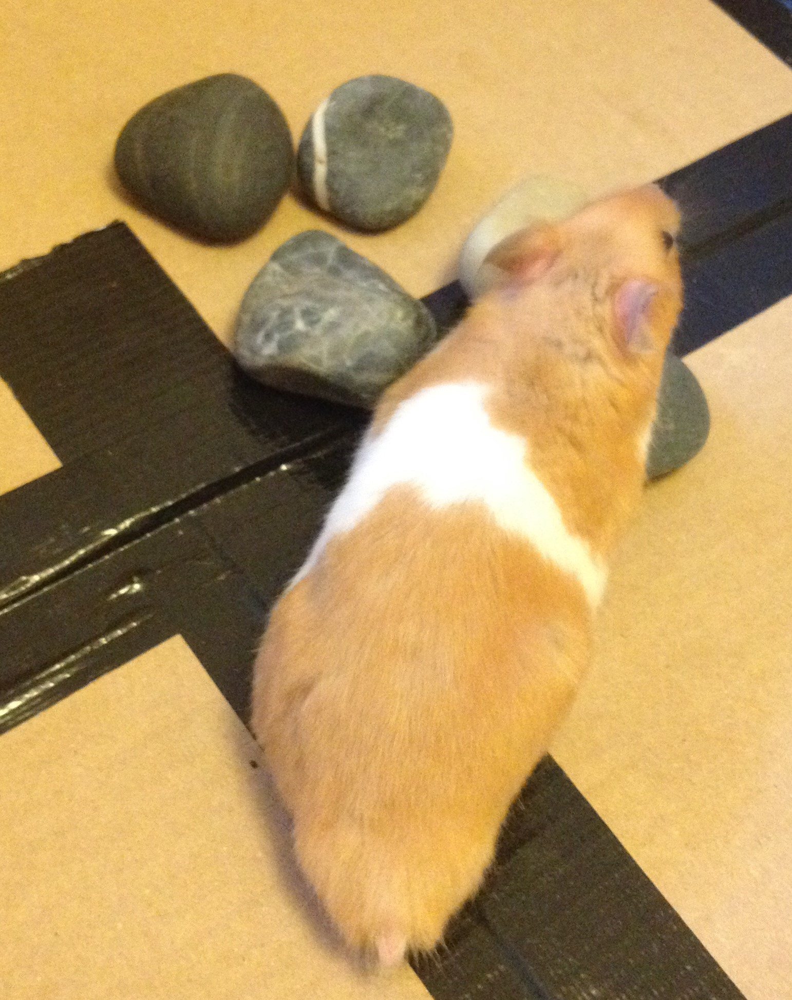